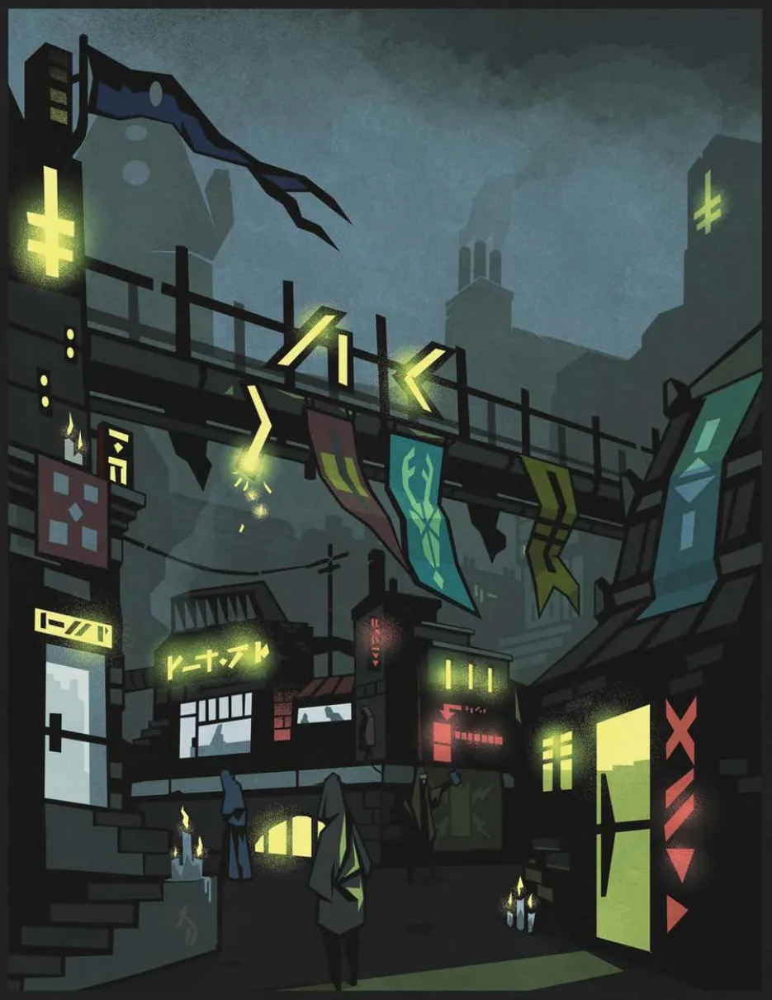

Die Sekte unserer Karmesinroten WachtS. 161

Der Blutmond, auch Jägermond genannt, hängt einmal im Monat am Himmel und wirft ein trübes, karmesinrotes Licht über die Welt. Diesen Aspekt des Mondes nennen die Dunkelelfen Lekolé oder Unsere Herrin der Rache, und ihre Gestalt ist schrecklich anzusehen: ein vielarmiges, turmhohes Gespenst der Zerstörung, ein feueräugiger Schemen in der Farbe von Blut, und sie predigt Reinheit durch Vernichtung.
Es gibt keine Sünde, die zu schwer wäre, als dass ihre Anhänger (gemeinhin Vigiliten oder Karmesinrote genannt) sie nicht zu ihrem Ruhm begehen würden: Sie töten Brütlinge und Kinder ohne einen zweiten Gedanken; sie stecken Gebäude oder ganze Häuserblöcke in Brand; sie verdammen hundert Drow zu qualvollem Tod, um einen einzigen Aelfir zu jagen und zu töten, den sie als Feind des Volkes betrachten. Oder: So steht es jedenfalls in den Zeitungen.
(So war es nicht immer, und so ist es auch heute noch nicht in Aliquam und Ys und den anderen Nationen der Drow, in denen Damnou verehrt wird. In ihrer eigentlichen Gestalt als Dreifaltigkeit wird die Herrin der Rache durch die Güte der Glorreichen Herrin und die Anmut der Verborgenen Herrin gemildert. Doch in Spire, seit ihre Verehrung in den Untergrund gedrängt wurde, ist die Sekte zersplittert und zu gewalttätigem Extremismus verkommen.)
Vigiliten
S. 163- Namen
- Corvy, Huxton, Wesyll
- Beschreibung
- Trägt eine scharlachrote Kapuzenrobe · Gehüllt in die heiligen roten Seile der Bound · Mit nacktem Oberkörper, bedeckt mit Andachtstätowierungen
- Schwierigkeit
- Die Karmesinrote Wacht zieht nicht die geschicktesten Kämpfer an – Schwierigkeit 0, außer man versucht, ihre Entschlossenheit zu brechen: dann Schwierigkeit 1
- Widerstand
- 3, wenn man sie überrascht, 5 auf dem Kriegspfad
35 - Ausrüstung
- Brandbomben W6Streuung W3Einweg, Knüppel und Messer W3
Vigiliten-Brandstifter
S. 163- Namen
- Lux Meridian, Ignacius, Matchlock
- Beschreibung
- Trägt Andachtsschriften bei sich · Hat einen Teil von sich selbst angezündet · Trägt die eigenen Fesseln als Buße
- Schwierigkeit
- Bei allem Getöse nicht geschickter als ihre Gefolgschaft; Schwierigkeit 0 – oder 2, wenn man sie umstimmen oder zum Rückzug bewegen will
- Widerstand
- 6 +1 je Vigilit in der Nähe
- Besonderes
- Für jeden Vigiliten in der Nähe steigt ihr Widerstand um 1.
- Ausrüstung
- Rot bemalte, zusammengeschusterte Schrotflinte W6FernkampfKernschussNachladenGefährlich, ernst aussehendes Messer W3Brutal